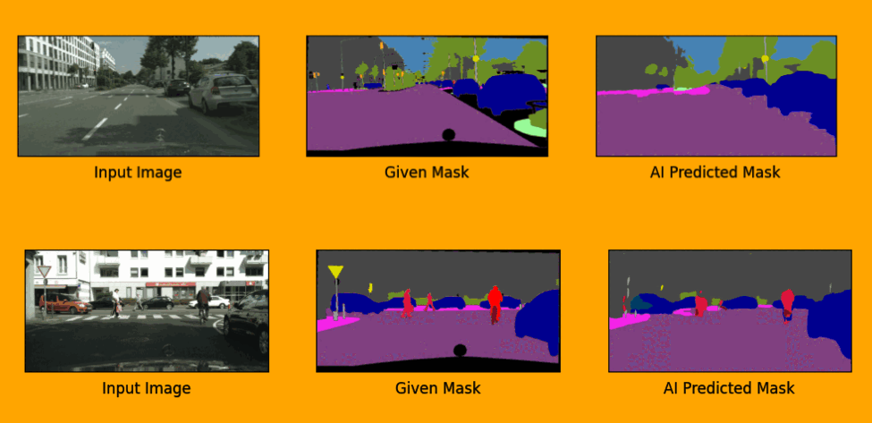
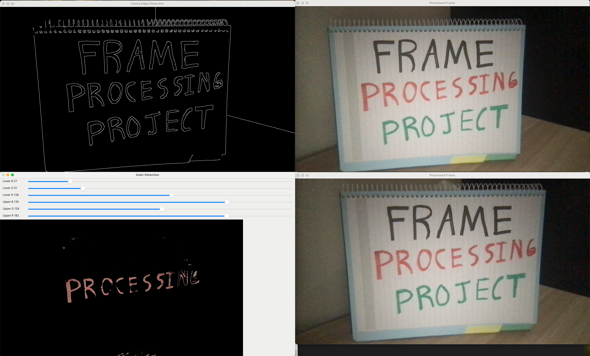
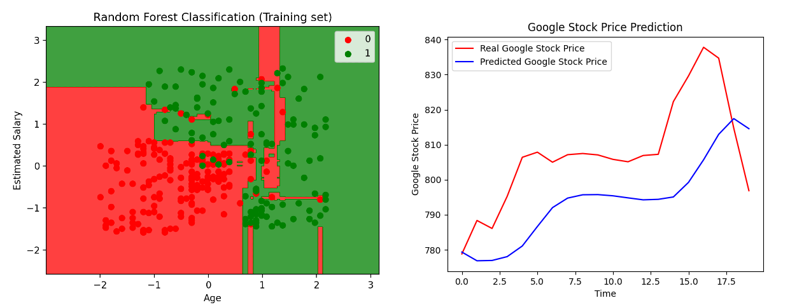

I built a database to store company financial data from a government API,
developed a backend to process and serve the data,
and created a frontend with interactive charts.
I also used machine learning to analyze the data and identify trends.
Skills: PostgreSQL, Python, TensorFlow, Scikit-learn, JavaScript, HTML/CSS, Node.js, React.js, Panadas

VisionAI leverages deep learning for semantic segmentation and object detection,
focusing on autonomous driving and smart city applications. By training AI models
on the Cityscapes dataset, it identifies and segments objects.
Skills: Python, PyTorch, Torch, Matplotlib, NumPy, Computer Vision, Deep Learning

This project provides real-time webcam processing, allowing the
user to choose from a variety of image processing modes, such as
color isolation, edge detection, and blur effects.
Skills: C++, openCV, threads, Computer Vision

This repository is a collection of various machine learning projects
I have worked on. Each project focuses on a unique problem and
demonstrates my ability to apply machine learning concepts and data
analysis techniques.
Skills: Python, TensorFlow, PyTorch, Keras, Scikit-learn, Matplotlib, NumPy, Scipy, NLTK

This tool simulates and analyzes heat sink performance
using finite element analysis (FEA). It visualizes thermal
distribution to optimize cooling efficiency.
Skills: C++, FEA, 3D data, Mesh, Matplotlib, ParaView, Advanced Mathematics, Linear Algebra